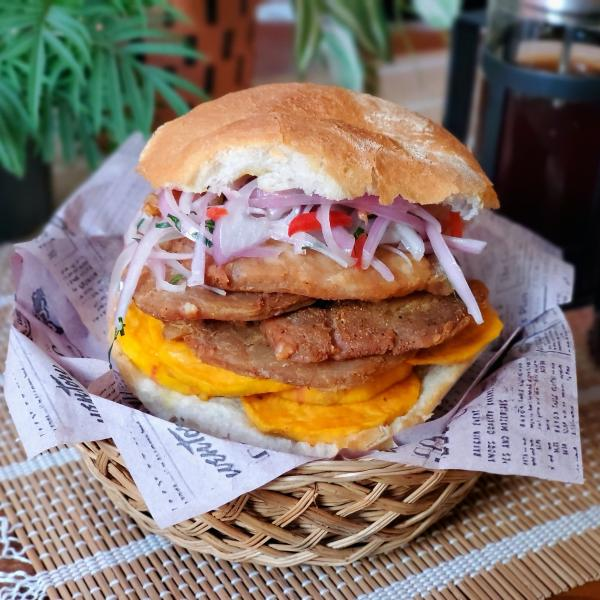
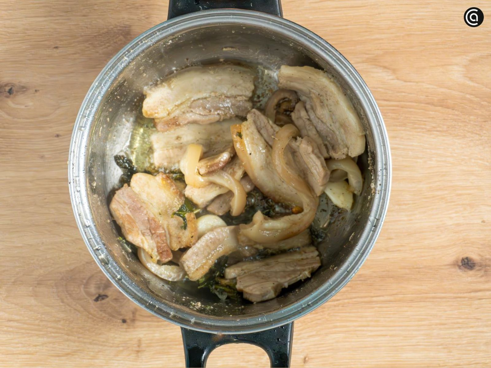
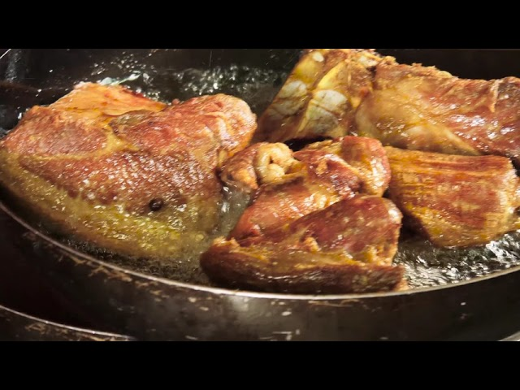
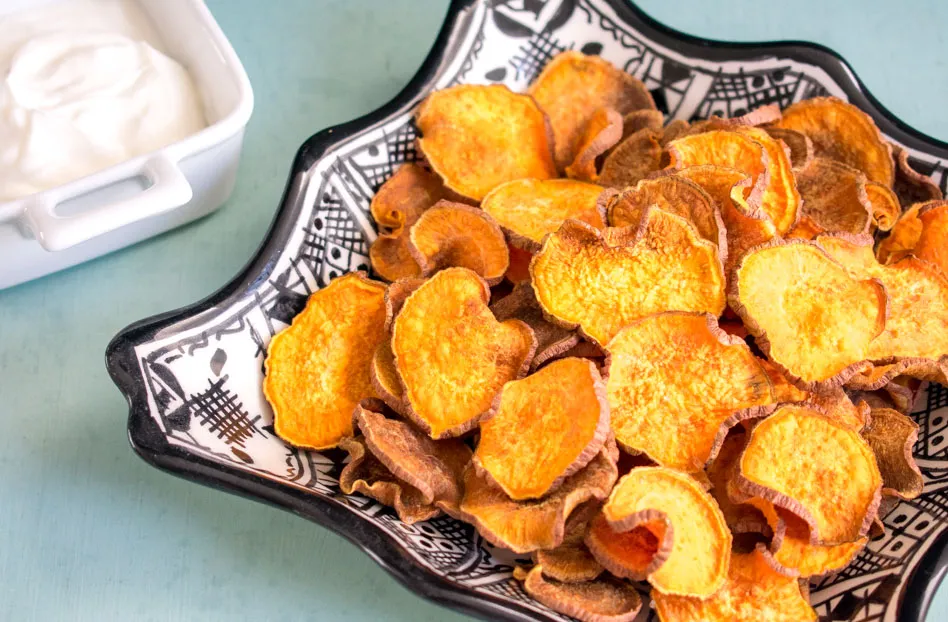
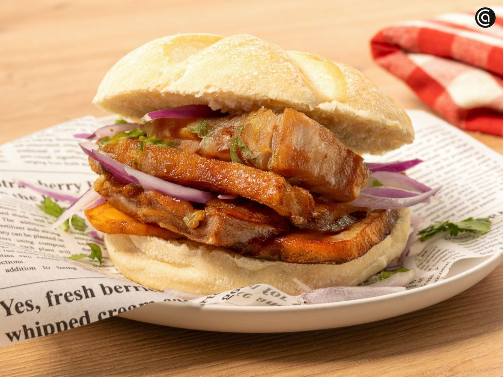

Sabor Criollo
Sabores peruanos que conquistan el corazón
Sabores peruanos que conquistan el corazón

El Pan con Chicharrón es el desayuno criollo más querido del Perú. Se prepara con chicharrón de cerdo crocante, camote frito y una deliciosa sarza criolla dentro de un pan francés. Un clásico infaltable en las mañanas limeñas y perfecto para acompañar con un café o emoliente.




Aprende a preparar un auténtico pan con chicharrón peruano como de chifa.